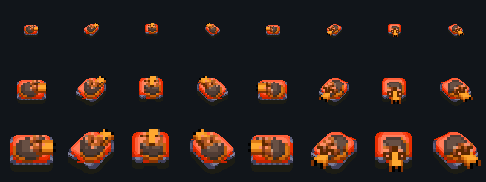
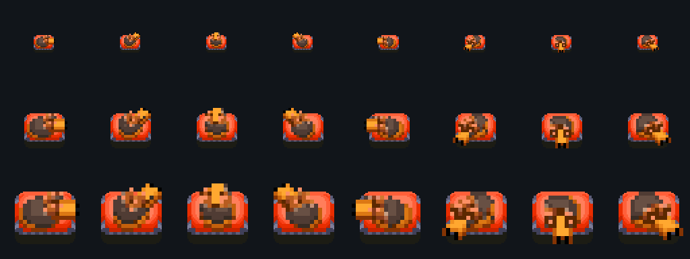
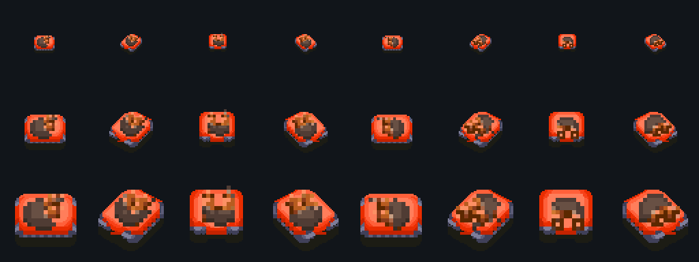
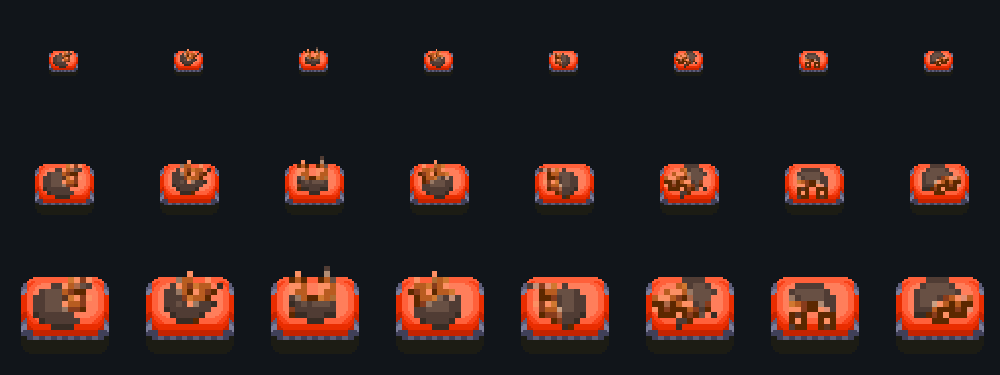

Dune Legacy Tornie 1.0.547
Super Tank de Kleshmersh à 925 crédits, sélection d’armée et de toutes les moissonneuses, Windtraps améliorés dans l’éditeur pour toutes les factions hors Vanilla, même sans Chaos, avec étoile verte. Protocole 25 ; sauvegardes 9840.
Support orange du Super Tank — 2 novembre 2026


Tourelle recentrée — 1er novembre 2026 (historique)


# Dune Legacy Tornie 1.0.547 ## Support orange du Super Tank — 2 novembre 2026 Le rendu ajoute le support de tourelle du Siege Tank, teinté en orange, sous le dessin original de la tourelle du Super Tank. La copie reste orange et pivote avec la tourelle supérieure autour du même axe. Le dessin original se superpose au-dessus. Les deux couches sont assemblées en mémoire ; les PNG originaux fournis par Tornie restent intacts. Le placement suit les **huit directions** et les **trois zooms**, en partie, dans l’éditeur et dans ses aperçus. Retélécharger les paquets **1.0.547** existants pour recevoir ce rendu. Le Super Tank coûte **925 crédits** ; compatibilité réseau : **protocole 25**, sauvegardes : **9840**. ## Correctif visuel du 1er novembre 2026 — historique Les paquets corrigés de la **1.0.547** recentrent la tourelle du Super Tank sur son châssis dans les **huit directions** et aux **trois zooms**, en partie, dans l’éditeur et dans ses aperçus. Les PNG originaux fournis par Tornie sont conservés. Retélécharger les paquets **1.0.547** existants pour recevoir ce correctif. Le Super Tank coûte **925 crédits** ; compatibilité réseau : **protocole 25**, sauvegardes : **9840**. ## Super Tank de Kleshmersh Le **Super Tank** est une nouvelle unité qui remplace l’Elite Siege Tank dans la production de Kleshmersh, dans Tornie, Jericho et ArcaKev. Il coûte **925 crédits**, possède **300 points de vie**, comme le Siege Tank standard, et tire une salve de deux projectiles incendiaires à la manière du Rocket Launcher. Sa destruction provoque une explosion dommageable sur le modèle du Devastator. Il conserve les conditions d’accès du char remplacé : Usine lourde et IX, accessible normalement au niveau 7, sans amélioration supplémentaire de l’usine. Les autres factions conservent leur Elite Siege Tank. Les départs de scénario et les renforts de Kleshmersh utilisant cet ancien char reçoivent le Super Tank lors d’une nouvelle mission. La tourelle et l’icône originales fournies par Tornie sont intégrées. ## Sélection en partie - **Armée**, sous le bouton Chemical Carryall : sélectionne les unités militaires disponibles ; les moissonneuses, MCV et transports restent dans leurs sélections propres. - **Moissonneuses** : sélectionne toutes les variantes disponibles, y compris Harvestank, grande capacité et rapide. - Les compteurs correspondent aux unités sélectionnables. Le contrôle allié est respecté ; une unité ennemie ou indisponible n’est pas sélectionnée. Les boutons cèdent leur place aux commandes des objets sélectionnés. ## Windtraps dans l’éditeur Dans les six mods hors Vanilla, l’option **« Améliorée au départ »** du Windtrap standard 2×2 est disponible pour toutes les factions, **sans exiger le mode Chaos**. Elle double la production initiale, active l’animation verte et affiche une **étoile verte dans l’éditeur**. Le réglage suit l’annulation/rétablissement, la carte et les sauvegardes. Cette propriété de carte ne réclame ni paiement ni IX au départ ; l’amélioration achetable en partie conserve ses règles Rebels et ses plans Chaos. ## Stabilité des missions Correction d’un crash à la fermeture ou au rechargement d’une mission lorsqu’une armée est encore sélectionnée. La lecture des checkpoints coop conserve maintenant les données de sauvegarde intactes pendant la restauration des réglages. ## Compatibilité Tous les participants réseau doivent utiliser **1.0.547 / protocole 25** et le même mod. Nouvelles sauvegardes : **9840**. Les sauvegardes précédentes restent lisibles avec leurs unités, tables technologiques et états enregistrés ; commencer une nouvelle partie ou mission pour recevoir les nouveaux remplacements. Les campagnes et briefings Jericho/ArcaKev restent conservés ; cette version adapte l’unité de Kleshmersh sans réécrire leurs campagnes. Le catalogue reste à **73 succès**. Les campagnes et coops révisées de la 546 sont conservées, ainsi que les accès Vanilla de l’éditeur et les liens DuneCity du site. Voir le suivi actuel pour les essais humains et l’avis des auteurs encore attendus.